Reminiscence
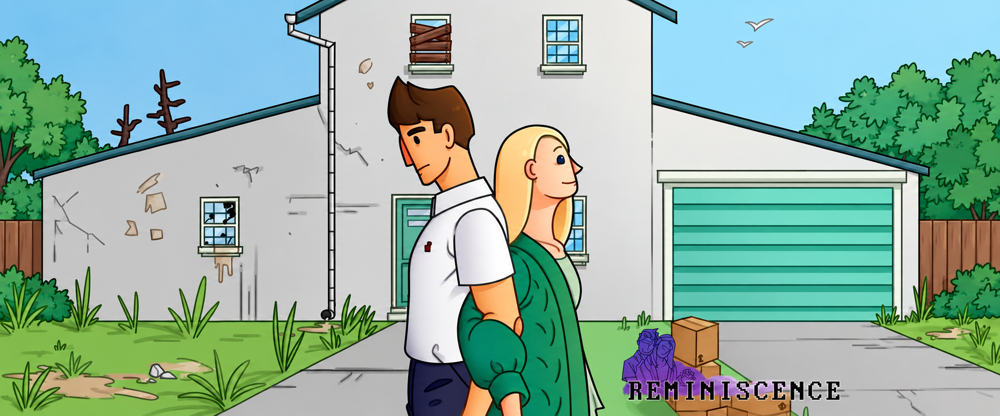
Reminiscence Trailer
The work behind the project
Led the art department, designed levels and the narrative structure, using environmental storytelling as the primary way for the player to understand what happened
Planning Phase
I began by creating a top-down representation of the level and its loops. Inspired by P.T., I used the loop system to tell a story across multiple timelines. Each room of the house unlocked progressively as players completed the objectives of the current loop. Every loop featured its own object placements and new, exclusive interactions.
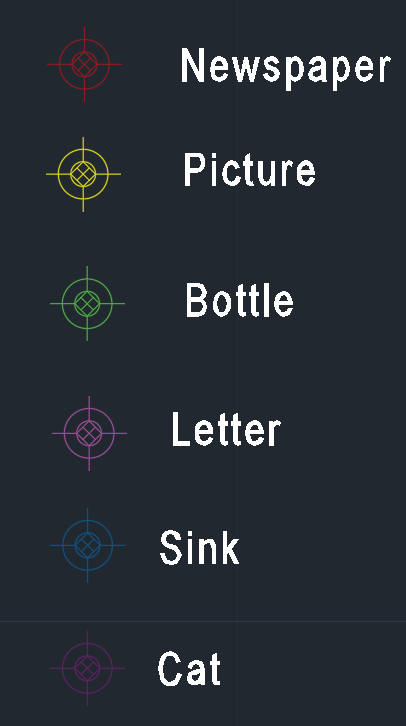
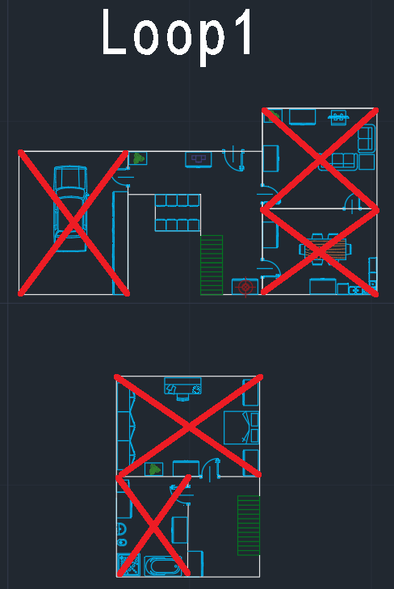
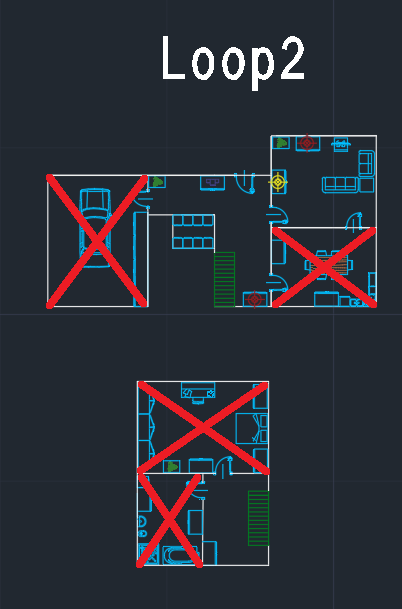
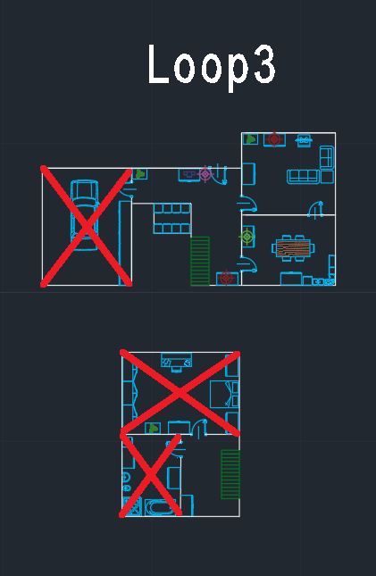
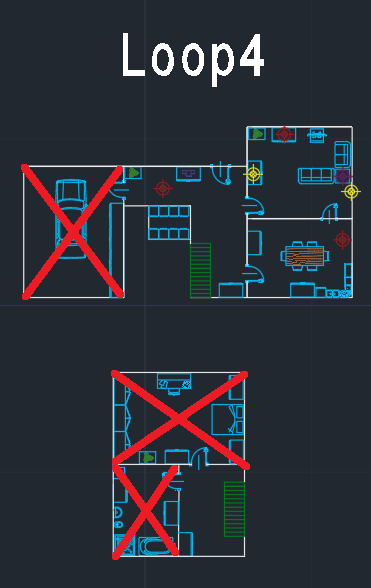
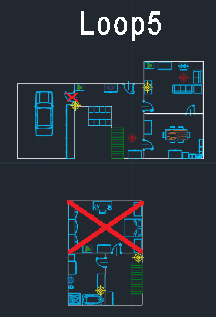
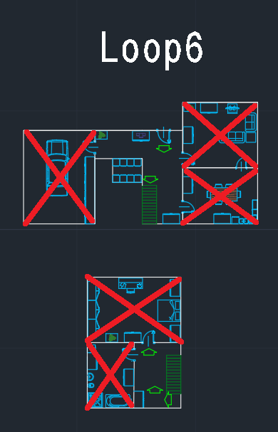
Assigning the Tasks to the Art Department
After defining the setting and visual style, I assigned individual tasks to each member of the art department, ranging from architectural tiles to props and interactable objects. I also selected two artists to focus exclusively on character production.
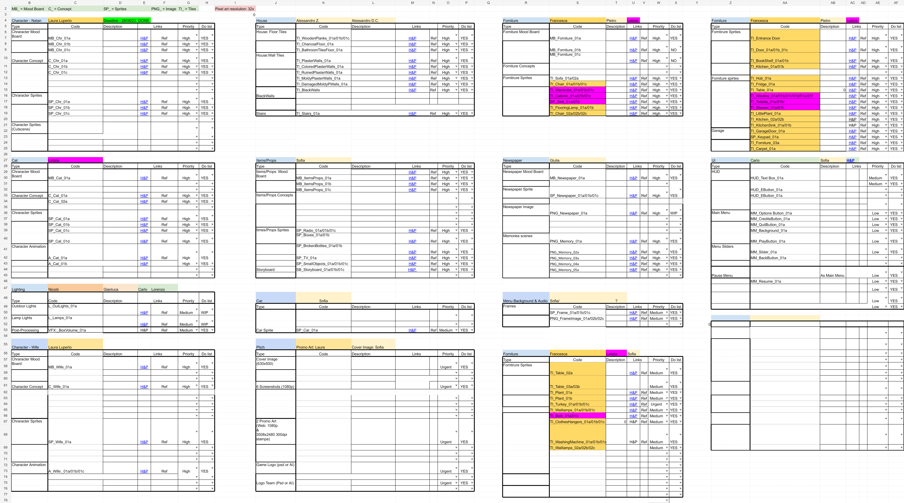
Building the Sensation of Downfall
Reminiscence tells a tragic story of loss, with a protagonist who spends the rest of his life consumed by regret. To convey this feeling to the player, I used colour and the condition of the house to reflect his emotional state. What begins as a clean, bright home gradually becomes a worn, ruined, and dark shell.
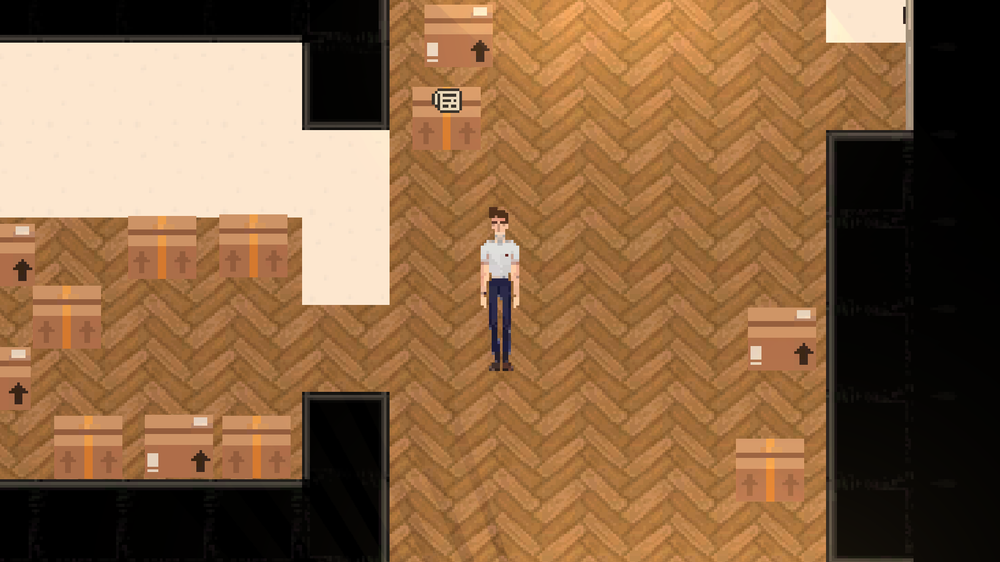
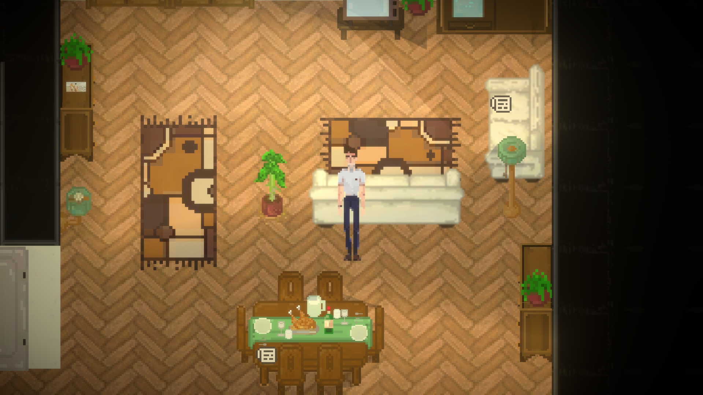
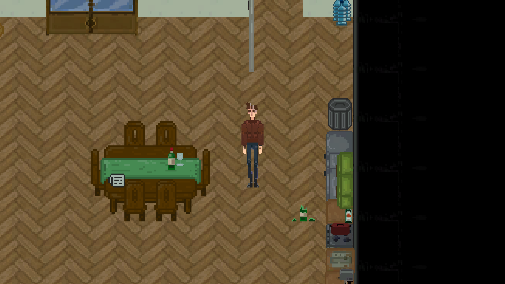
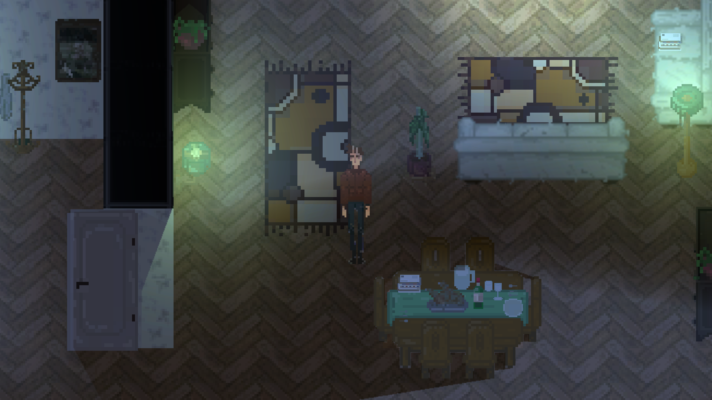
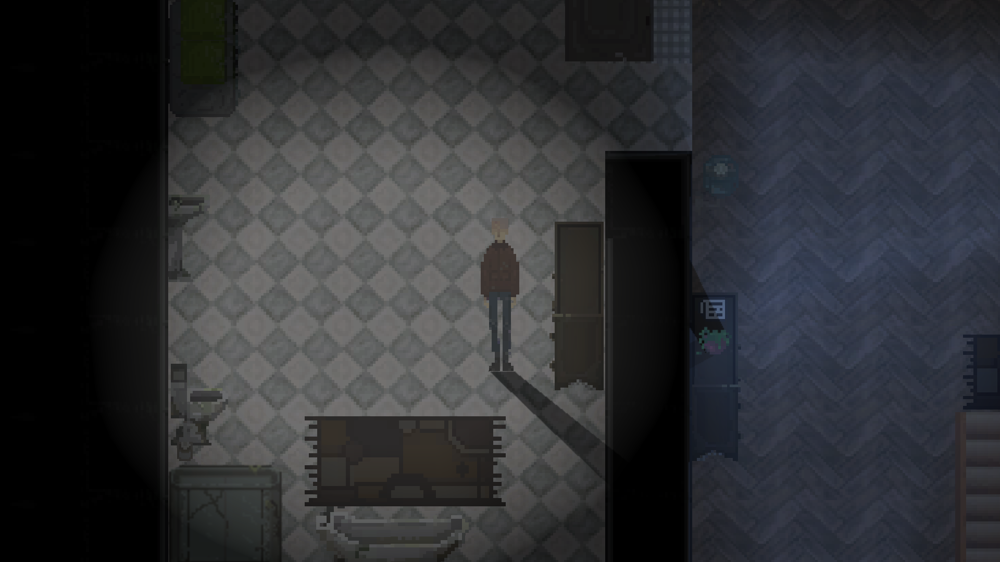